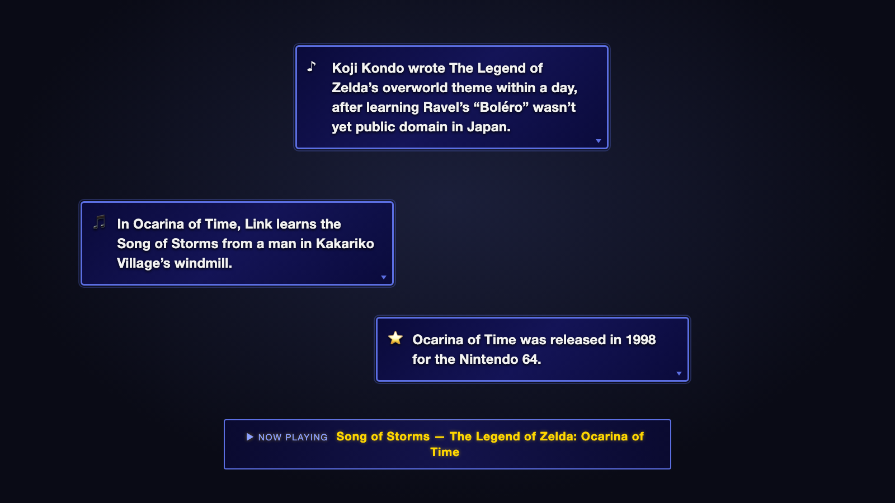

Free app for music streamers
BubbleFacts
Fact bubbles about the song you're playing, checked against Wikipedia. Game-style boxes appear on your stream while you play requests, so your chat learns something about every song.
Beta note: your Mac or Windows may ask you to confirm you want to open BubbleFacts, because this beta isn't digitally signed yet. Here's exactly what to click.
Download BubbleFactsFree for Mac, Windows and Linux.
All downloads
- Mac macOS 13 or newer (.dmg). Need the Intel version? Which Mac do I have?
- Windows Windows 10 or 11, 64-bit (.exe)
- Linux, Ubuntu and Debian 64-bit (.deb)
- Linux, other 64-bit (.AppImage)
Latest version: see all releases

How it works in 3 steps
Download the app and open it. A short setup walks you through three steps, and the last one is optional. About 10 minutes the first time. No coding, no Terminal. BubbleFacts works right away while its built-in AI downloads.
-
Connect your songs
Click Sign in with StreamerSongList and sign in with the Twitch account you use there. That lets the app see which song you're playing.
-
Put BubbleFacts on your stream
Open OBS, choose the scene you normally stream from, and drag the tile from the app into your Sources list. A test bubble pops up, and the app says It's on your stream!
-
Tell us about your music (optional)
Say whether you play your own compositions and do live learns, and set up backup facts for songs with no Wikipedia article. The app comes with only a few examples, so add your own now or later. Or click Skip.
Why the facts are true
AI can make things up. BubbleFacts is built to keep made-up facts off your stream.
- It reads first. When a song starts, the app finds the song, or the game or film it's from, on Wikipedia.
- It writes from the article only. An AI turns a few details from that article into short captions. It is never asked to answer from memory.
- It checks every caption. Any caption that mentions a name, year or console the article doesn't is thrown out before it reaches your stream.
No article? Then the AI isn't used at all, and you get backup facts instead. The included ones are only a few examples, so add your own. The facts are only as good as Wikipedia: the check makes sure a caption matches the article, not that the article is right.
What you'll see on stream
NOW PLAYING banner
A gold banner names the song for five seconds when it starts.
Fact bubbles
Up to five game-style boxes pop up, one at a time, about 15 seconds apart.
LIVE LEARN banner
When you take a request that isn't on your list, a banner shows the title and who asked for it, and stays up until the next song.
Your own compositions
Play one of your originals and the bubbles talk about your piece, using what your song list knows: that it's yours, how often you've played it, who requested it, and your note on it.
What you need
- A Mac with macOS 13 Ventura or newer (Apple silicon or Intel), a Windows 10 or 11 PC (64-bit), or a 64-bit Linux computer (tested on Ubuntu 24.04 and newer)
- At least 8 GB of memory (16 GB is better) and 4 GB of free disk space
- OBS Studio 28 or newer
- A free StreamerSongList account
Questions
Is it free?
Yes. The app is free and open source. With the built-in AI there's nothing to pay for. If you'd rather use an online AI (optional, in Settings), Groq has a free plan with a daily limit, and Anthropic charges a fraction of a cent per song.
Do I need to know coding?
No. You download an app and click through a three-step setup. One step is dragging a tile into OBS. If you can add a webcam to OBS, you can do this. The setup guide walks you through every click.
Which computers does it work on?
Macs with macOS 13 Ventura or newer (Apple silicon or Intel), Windows 10 or 11 (64-bit), and 64-bit Linux, tested on Ubuntu 24.04 and newer. You need at least 8 GB of memory and OBS Studio 28 or newer. It doesn't run on phones, tablets or Chromebooks. See the system requirements for details.
Can BubbleFacts run on a different computer from OBS?
Not yet. BubbleFacts needs to run on the same computer as OBS. Two-PC setups, such as a music PC plus a streaming PC, aren't supported yet.
What if my computer can't run the built-in AI?
You'll still be able to use BubbleFacts. If the built-in AI can't run, for example on an older processor, the app first tries a simpler mode that uses only the processor. If that doesn't work either, it walks you through switching to the free online option, Groq. You don't have to figure it out yourself.
Will it slow down my stream?
BubbleFacts runs beside OBS. The boxes on screen are light, simple animations. The work happens when a song starts: the built-in AI spends a few seconds writing facts, using your graphics chip or processor.
On most computers you won't notice. If your computer has no graphics card and you notice lag, choose Online: Groq in the app's Settings, under Who writes the facts. It's free and does the AI work online instead.
Does it work offline?
Partly. The built-in AI downloads once, on its own, when you first open the app. After that, it runs without the internet. But the app still needs the internet to read your queue from StreamerSongList and to look songs up on Wikipedia. Since you're streaming, you'll be online anyway.
Can I use it without StreamerSongList?
Not yet. BubbleFacts learns which song you're playing from your StreamerSongList queue, so you need a StreamerSongList account. It's free.
Does it work with Streamlabs Desktop?
It should, but it isn't tested yet. Dragging the tile may not work there. Instead, add a Browser source by hand: follow the add-it-by-hand steps. Only OBS Studio is tested.
What does the AI do?
It turns a few details from a Wikipedia article into short captions that fit on screen. That's all. It never makes up facts from memory, and every caption is checked against the article before it's shown. The built-in AI is Llama 3.2, a small model made by Meta that runs on your own computer.
Where does my data go?
Almost nowhere. The app runs on your computer and reads your queue from StreamerSongList. It sends song titles to Wikipedia to find articles. If you pick an online AI, the song title and article text go to that service. Nothing is sent to this project. Your sign-in, token and keys are stored encrypted on your computer. The privacy page has the details.
Is my sign-in safe?
You sign in to StreamerSongList in your own web browser, so BubbleFacts never sees your Twitch password. Your StreamerSongList sign-in (or token, if you use one) and any API keys are stored only on your computer, encrypted with your system's keychain, the same secure storage your computer uses for its own passwords. They're removed from problem reports before you see them. If you use a token, treat it like a password and keep it off your stream.
What happens when a song has no Wikipedia article?
The app shows backup facts instead. The packs it comes with are only a few examples. They're short, they aren't updated or maintained, and they won't know your songs. Add your own during setup, in the Your music step, or any time in the app's Settings, under Backup facts. They go on stream exactly as you write them, so only add facts you've checked. See backup facts in the setup guide.
What if a fact is wrong?
Click Report this fact in the app. It opens GitHub, where you need a free account, and fills in a report with the song, the fact and the Wikipedia article it came from, for you to check and send. Those reports are the most useful kind, because they show where the fact check needs to be stricter.
Where do I get help?
Start with the troubleshooting table in the setup guide. Then ask on Discord, or click Report a problem under Help and troubleshooting in the app. The help page lists every option.
Who made this
BubbleFacts was built with Claude Code, Anthropic's AI coding tool, and directed and tested by frolicchris, a musician and streamer who plays piano requests on Twitch. It was tested on live streams and fixed when it got things wrong.